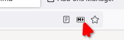

In version 2, Markdown Viewer renders pages in an extension page, which:
ext+view-markdown: protocol,Below are a few features and settings, you can always change later from the addon’s preferences page later.
Markdown Viewer now allows the possibility to render pages manually through a button in the address bar.

If you prefer pages being rendered automatically, Markdown Viewer will need access to all pages that match markdown file names to check they are renderable.
For pages that prevent checking whether the they contain renderable markdown, through e.g. security policies, the address bar button remains available.
The add-on can display a menu on the rendered page, with:
Markdown Viewer also includes a number of markdown-it plugins to extend the markdown standard, that can be enabled or disabled in the settings page.
You can also specify custom CSS to apply on every page.
You can link to any page to render it as markdown, by prefixing with ext+view-markdown:, e.g.:
ext+view-markdown:https://raw.githubusercontent.com/Cimbali/markdown-viewer/master/README.md
Markdown Viewer can also prompt for a local file or URL. For that, use the toolbar (or overflow-menu) button, or go to
ext+view-markdown: .
This prompt is now also a necessary step to grant Markdown Viewer access to local files, and avoids Firefox attempting to download markdown files instead of opening them.
Some functionality can not be quite replicated for local files, i.e. file:// URLs:
Therefore, you can revert to injecting scripts into the local markdown page. This reverts the benefits listed at the top of this page.
To use this legacy mode, Markdown Viewer will need Firefox to consider markdown files as text (or Firefox will attempt to download these files instead of displaying them).